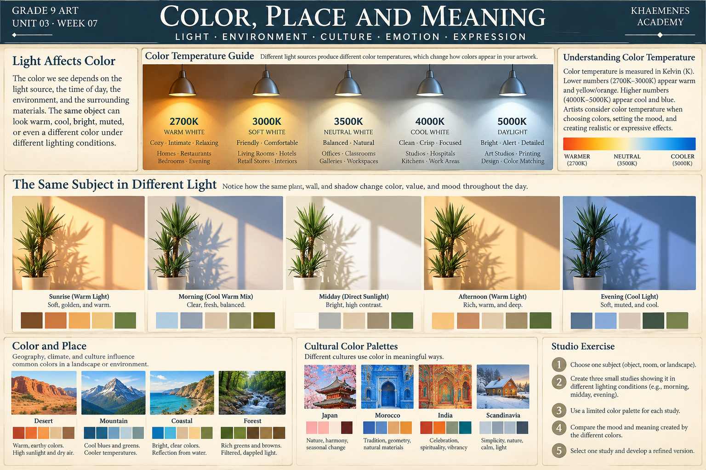

How does the meaning and appearance of a color change when its lighting, surface, surroundings, and cultural context change?
Learning goals: document observed color under different lighting conditions; distinguish material color from perceived color; analyze the effect of surrounding colors; research a color interpretation without stereotyping; and create an original artwork grounded in place.
Four influences on the color we see
Light
The spectral qualities and direction of illumination change the light reaching our eyes. A white page under warm indoor light may look different from the same page in daylight. Our visual system partially adapts, but photographs and screens may respond differently.
Material
Matte paper, glossy ceramic, transparent glass, and rough stone reflect and transmit light differently. Record highlights, reflections, texture and shadow rather than naming only the object's local color.
Surroundings
Neighboring colors change contrast and visual emphasis. A neutral patch can appear warmer or cooler depending on its surroundings; its RGB value need not change.
Context and interpretation
Colors can acquire symbolic meaning through particular works, historical settings, materials, ceremonies, institutions and personal experience. No color has one universal cultural meaning. Research a specific example, identify whose interpretation it represents, and cite a source rather than generalizing about a population.
Illustrated reference · Color temperature, place and meaning
Use this original visual guide to compare the apparent color of light, the same plant under different illumination, and examples of landscape and architectural palettes. Treat the cultural examples as starting points for specific research, not as universal meanings assigned to countries or communities.

Visual study · Kelvin labels describe correlated color temperature, not brightness. The pictured conditions and palettes are illustrative rather than calibrated measurements.Mini-lesson · Why 2700 K and 5000 K light can change a painting
Correlated color temperature (CCT) describes whether a source of nominally white light appears warmer or cooler. Around 2700 K, many lamps look yellow-orange; around 5000 K, many look more neutral or cool by comparison. CCT does not tell you the amount of light, its direction, its spectral rendering quality, or how bright a surface will appear. Two lamps with the same CCT can still render pigments differently.
Try it: place one neutral paper and three colored swatches under two safe light sources. Record apparent hue, value, saturation, shadow direction and any change in contrast. Keep distance and exposure as consistent as possible. Never stare into lamps or use hot fixtures.
Mini-lesson · A plant and its cast shadow
A cast shadow is formed when the plant blocks light from reaching the wall. The shadow’s direction, shape, edge softness and length depend on the relative positions and sizes of the light source, plant and wall. Distinguish the cast shadow on the wall from the form shadows on the leaves and trunk. Observe the negative spaces between leaves and note where overlapping silhouettes become difficult to read.
Try it: make two quick drawings of the same plant or another safe household object using different light directions. Mark the source position with an arrow, outline the cast shadow, then add at least three values. Compare which image best communicates spatial depth.
Illustrated study · One place, three lighting conditions
These three original illustrations keep the same simple building and landscape composition while changing the palette. Compare sky, wall, ground and shadow separately. Notice how the apparent mood changes even when the geometry does not.
Original comparative study · These are deliberately designed palettes, not measurements of actual daylight. A real location’s color depends on weather, latitude, season, materials, and observation conditions.Stage 1 · Observe and measure the visual evidence
Look at one safe location from the same viewpoint at two different times, or use your own dated reference photographs. Draw a four-column observation table: light source and direction; surface/material; surrounding colors; observed hue, value and satu
Interactive visual laboratory · Light, surface and shadow
Experiment with the same ceramic cup under different light temperatures, directions and surroundings. The artwork responds to your controls; no image upload or outside service is required.
Teaching simulation, not a calibrated lighting renderer. Observe the cup highlight, cast shadow, wall, and reflected color; verify ideas with a real object.
Five lighting comparisons
Observation notebook
Try two directions and two surfaces at the same temperature. Which changes the shadow geometry? Which changes perceived color? Explain what you observed before interpreting mood.
Compare the light on the rim, the apparent warmth of the ceramic, the contrast against the cloth, and the shadow. Observe a real object before making scientific claims.
Worked comparison
Imagine the same pale ceramic cup photographed near a window and beneath a warm lamp. The cup's material has not changed, but the recorded light may shift. A dark blue cloth may also make the cup stand out more than a similarly light neutral surface. A careful artist describes the lighting and contrast, not merely “the cup became yellow.”
Week 07 original studio assignment · Portrait of a place through color
Choose a meaningful, safely accessible place: a window, kitchen, garden, street view, or remembered location. Record what you observed and distinguish direct observation from memory.
Produce two color observation studies of the same subject under different lighting or surrounding conditions. If conditions cannot be changed, compare two carefully labeled references and explain the limitation.
Research one specific artwork, object, or documented practice in which color has a contextual meaning. Record the creator, place or institution, source, date if available, and the interpretation supported by that source.
Create one original finished artwork that communicates a particular atmosphere or relationship to place. Use deliberate value structure and color relationships from Weeks 05–06.
Archive both studies, your final artwork, citations, and a 150–250-word artist statement in the portfolio established in Week 01.
Use your own drawings or photographs, or properly attributed reference material. Do not assume any culture has one fixed interpretation of a color.
Academic evidence · Week 07
Evidence stays in this browser until exported. This page is not an authenticated submission.
Reviewer rubric · 100 points
Two accurate observational studies (25) · specific, sourced contextual research (20) · original finished artwork with intentional color and value (35) · artist statement and portfolio evidence (20). The 80% mastery requirement is determined by an authorized Academy assessment workflow, not this standalone page.